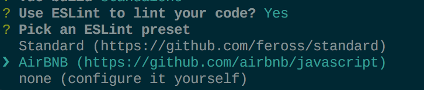

Request
| URL | HTTP Verb | Action |
|---|---|---|
| /api/book | GET | 获取book列表 |
| /api/book/:id | GET | 查看某个具体的book |
| /api/book | POST | 新建一个book |
| /api/book/:id | PUT | 更新ticket |
| /api/book/:id | DELETE | 删除book |
| URL | HTTP Verb | Action |
|---|---|---|
| /api/book | GET | 获取book列表 |
| /api/book/:id | GET | 查看某个具体的book |
| /api/book | POST | 新建一个book |
| /api/book/:id | PUT | 更新ticket |
| /api/book/:id | DELETE | 删除book |
最近一个花店的项目让我有机会动手写上了Vue。(学习新技术还是需要项目驱动,要不真是没动力🐵)。就这样使用官方的脚手架vue-cli搭建了项目,经过几个选择之后项目搭建成功。
vue-cli

其中这个选项,让我走上了ESLint这条不归路。
近期公司决定重构项目代码,(因为实在不能维护了,各种深度回调🐒)。于是终于决定使用es6进行项目重构,在重构前先对现有的解决回调嵌套的几种方式进行了实践,在此记录下来。
在此之前项目中主要使用第三方库async处理异步。通过async模块,确实可以很好的控制异步流程,代码变得清晰很多,也算是解决了层层异步回调的问题,但是写法上仍然是回调函数。所以这种方式在此就不多叙述了。
拥抱ES6:
ES6中引入了原生的Promise给js中的回调问题提供了解决方案(但是还是习惯使用Bluebird)。ES6语法中的Generator函数搭配TJ大神的co模块也是给我们带来了编写同步代码的体验,同时可以使用try/catch。ES7中提供了async和await,
可以说是Generator和co的升级版,比起*和yield，语义更清楚。而且不用引用第三方的co模块。并且在Node.js7中,已经支持async和await。
在CentOS环境下,直接修改/etc/resolv.conf文件配置DNS,在重启后会恢复到原来的状态。所以可以通过ifconfig命令查看当前网卡信息，直接修改网卡配置文件。
进入网卡配置文件目录，修改配置文件
|
|
说来惭愧,由于公司产品的数据存储大多存储在医院HIS系统,我们接口服务层Mongo数据库大多只作为缓存使用,便一直没有意识到数据备份的重要性。
直到前些天数据发生遗失(不说原因了太丢人🙊)
直接上脚本:
Welcome to Hexo! This is your very first post. Check documentation for more info. If you get any problems when using Hexo, you can find the answer in troubleshooting or you can ask me on GitHub.
|
|